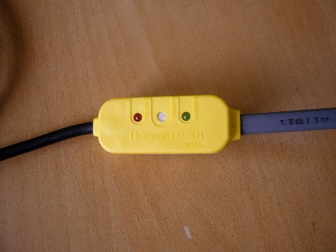

Lavita
Термостат KIT-I — без влагозащиты
Для установки в сухом месте с защитой от воды и конденсата. Включение ниже +5 °C, выключение при достижении +15 °C. Максимальная мощность — 2 кВт.
1 700 ₽Запросить подбор →
Терморегулятор THERMOSTAT KIT в ярком жёлтом корпусе от Lavita (Южная Корея) — простое и надёжное решение для автоматического управления саморегулирующимся греющим кабелем. Предназначен для систем обогрева труб, водостоков, ступеней и других объектов, где требуется включение нагрева при понижении температуры.
Как это работает
Устройство отслеживает температуру окружающей среды и автоматически включает или отключает подключённый греющий кабель:
Индикатор POWER горит постоянно при подключении к сети.
При падении температуры ниже +5 °C включается нагрев, загорается индикатор OPERATING.
При достижении +15 °C нагрев отключается, индикатор OPERATING гаснет.
Жёлтый цвет корпуса делает устройство заметным при монтаже и обслуживании — его легко найти в теплоизоляции или в распределительном шкафу.
Технические характеристики
| Напряжение | 220–230 В. |
|---|---|
| Максимальная мощность нагрузки | 2000 Вт. |
| Коммутируемый ток | 10 А. |
| Погрешность срабатывания | ±5 °C. |
| Длина кабеля питания | 2 м (с вилкой 250 В / 10 А). |
| Условия эксплуатации | температура воздуха от 0 °C до +50 °C, влажность 30–80%. |
| Степень защиты | базовая (без полноценной влагозащиты) — предназначен для установки в сухих помещениях или внутри утеплённого короба/изоляции, исключающих прямое попадание влаги. |
Комплектация
Терморегулятор THERMOSTAT KIT (жёлтый корпус).
Кабель питания (2 м) с вилкой.
Паспорт и инструкция по установке.
Особенности монтажа
Устанавливайте терморегулятор на участок трубы с самой низкой температурой.
Фиксируйте крепёжной лентой, затем обязательно закрывайте теплоизоляцией — это защищает устройство от конденсата и осадков и повышает точность работы.
Из-за отсутствия влагозащиты не допускайте прямого контакта корпуса с водой и конденсатом.